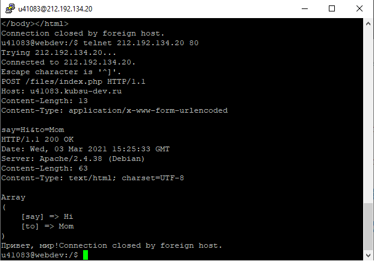
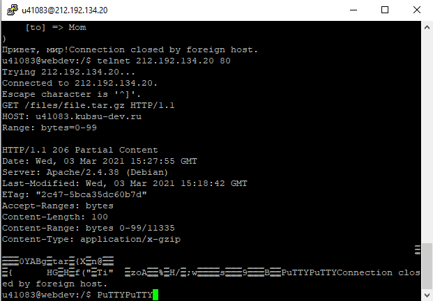
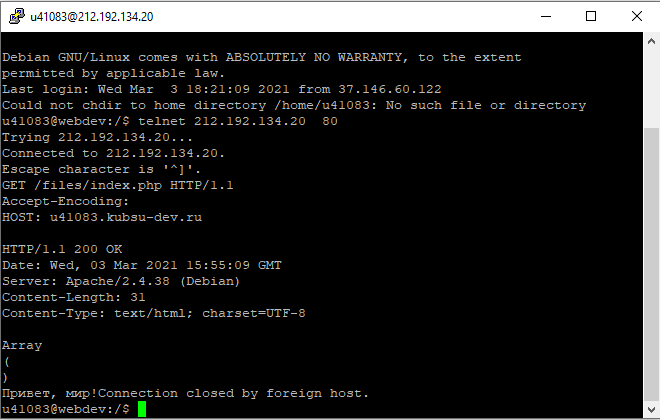

получить главную страницу методом GET в протоколе HTTP 1.0;
получить внутреннюю страницу методом GET в протоколе HTTP 1.1;
определить размер файла file.tar.gz, не скачивая его;
определить медиатип ресурса /image.png;
отправить комментарий на сервер по адресу /index.php;

получить первые 100 байт файла /file.tar.gz;

определить кодировку ресурса /index.php.
